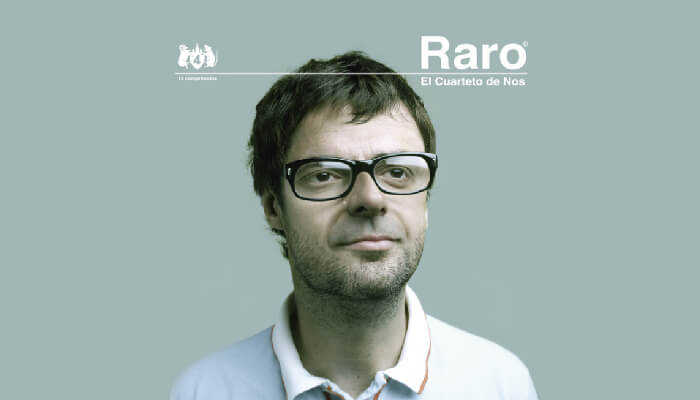
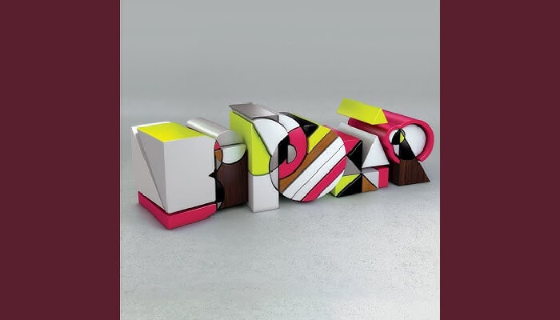
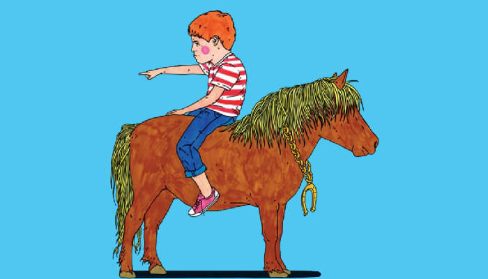
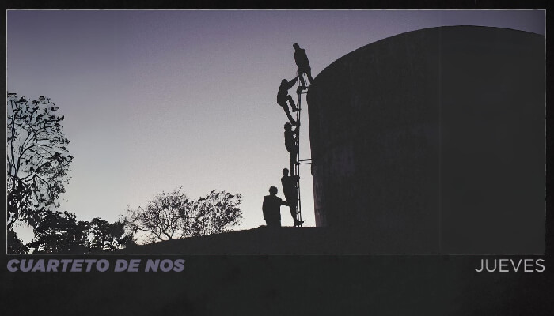

🎵 El Cuarteto de Nos
Descubre la discografía de una de las bandas más innovadoras del rock latinoamericano

RARO (2006)
Undécimo álbum de estudio producido por Juan Campodónico. Un trabajo conceptual que marcó un antes y después en la historia de la banda.

BIPOLAR (2009)
Decimotercer álbum con once canciones inéditas y una nueva versión de "Me amo". Lanzado bajo el sello Warner Music.

PORFIADO (2012)
Decimotercer álbum de estudio con doce canciones inéditas. Lanzado el 25 de abril de 2012 bajo Warner Music.

HABLA TU ESPEJO (2014)
Lanzado el 6 de octubre de 2014. Incluye sencillos como "No llora", "Cómo pasa el tiempo" y "Roberto".

APOCALIPSIS ZOMBIE (2017)
Publicado el 12 de mayo de 2017. Primer disco producido por Cachorro López bajo el sello Sony Music Argentina.

JUEVES (2019)
Publicado el 16 de agosto de 2019. Contiene nueve canciones en total bajo el sello Sony Music Argentina.